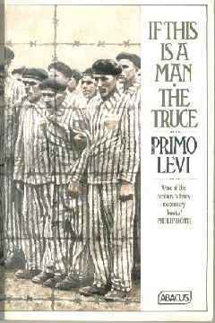

Primo Levi
Primo Levi's Works: "If This Is a Man" and "The Truce"
Overview:
"If This Is a Man" is a memoir by Primo Levi, recounting his experiences in the Auschwitz concentration camp during World War II. The book is a poignant exploration of human resilience, the depths of cruelty, and the struggle for survival under the most harrowing conditions.

Summary:
Arrest and Deportation:
.Primo Levi, an Italian Jewish chemist, is arrested by Italian fascists in December 1943.
.Deported to Auschwitz in February 1944, Levi is confronted with the brutal reality of the concentration camp.
Life in the Camp:
. The memoir details the daily life of prisoners, highlighting the dehumanizing conditions, forced labor, starvation, and constant fear.
. Levi describes the hierarchy among prisoners and the harsh treatment from guards and kapos (prisoner overseers).
Struggle for Survival:
. Levi emphasizes the importance of maintaining one's humanity, intellect, and dignity amidst the dehumanizing conditions.
. He recounts strategies for survival, such as finding ways to get extra food and forming alliances.
Liberation:
.As the Allied forces advance, the Nazis evacuate Auschwitz. Levi is left behind in the camp's infirmary due to illness.
.The memoir concludes with the liberation of the camp by the Red Army in January 1945, marking the end of Levi's imprisonment but not his emotional and psychological ordeal.
Themes:
.The nature of humanity and inhumanity.
.Survival and resilience.
.The importance of memory and witnessing.
.The impact of extreme conditions on human behavior and ethics.